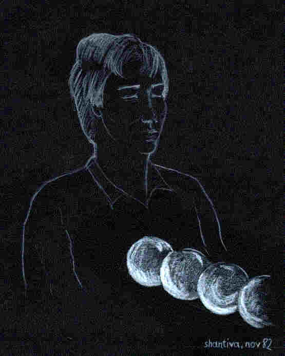
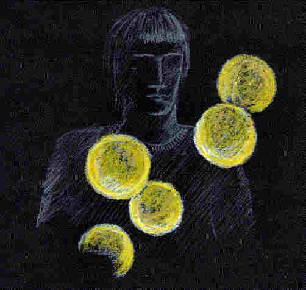
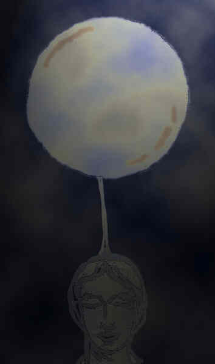
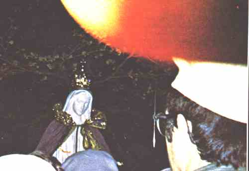
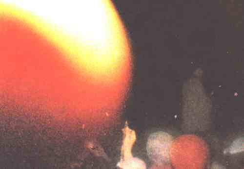
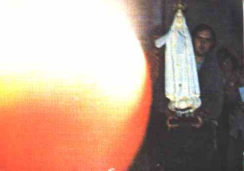
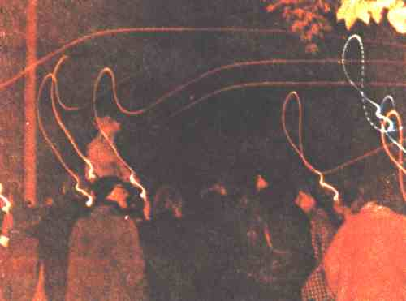

© copyright Alfred Ballabene, Vienna, 2000
Usually the shape of the subtle body is formed as a duplicate of the physical. This appearance is common in the OBE field. In occultism and theosophism it is called "double". Concerning the frequency of observed subtle body shapes in form of doubles I am not able to relate to statistics, but I for my part believe, that it must be about 90 to 95 percent of OBE experiences. Besides this usual appearance of OBE projections and ghosts there is another unusual form of projection of the human consciousness - the balls of light.
| From: The Ghost Web (http://www.ghostweb.com/config.html)
"Spheres or balls of light are formed from the evolution of a vortex. These balls of light are often called "ghost lights" and are often captured on film in old theaters and cemeteries. These balls of light may or may not be visible to human eye. The spheres may be of various colors and appear as solid or transparent outlines" |
H.Durville has made photos of such "mental bodies" as they were called by him, but they are of bad quality, so that I have not reproduced these images.
At some occasions clairvoyant sights are reported, in which a
subtle emanation is observed in the shape of a ball. The states providing such
results are in first place IBEs (in the body experiences) and NDEs respectively
tunnel like phenomena and further visions of deceased and elementals. In
theosophy this form of vehicles of life are called "mental body", but I for my
part do not use this term, because I believe that these balls have nothing to do
with the mental human aspect.

Let us stop theoretical considerations for a while and look at practical aspects, at the relation between size and brightness, which can be easily set, if you have had several different observations of the balls.
Some correlation between brightness and size of such balls:
Having had some thoughts about the origin of these light balls I came to the conclusion, that their origin is found in the chakras and that they are used as a kind of projected awareness. For the latter reason balls very often seem to be a vehicle for a far distant projection of awareness. As I suppose the balls of light have an inherent high dynamism, the source of which could be a chakra. In most cases the active chakras are located in the the region of breast and head, thus are the higher chakras. This is the reason why the reported color of the balls mostly is yellow/orange (anahata chakra) or white or blue (both relate to the ajna chakra) or perl mut (sahasrara chakra).
Some reports
| A friend of mine: "I had unbearable great pain and the desire to get rid of the painful body, at least for a short while in order to have some relieve. At once I had the feeling of a foggy ball separating from my breast. The ball at first instant seemed to be connected by a lot of bands to my physical, similar to those bands which you can observe when splitting hot cheese into two parts. The ball floated to the glass door in front of my bed. Then, in the next moment I felt myself before the glass door, having a look into the garden. I had no body feeling at all, I simple was present. The most impressing to me was the fact of having no pain and being in a peaceful state." |
| Douglas, newsgroup: alt.life.afterlife27-05-1995 "My sister read a book recently by Brian Weiss, which mentioned colored lights, I believe in reference to reincarnation. She remembers dreams as a child of traveling down a tunnel, followed by friendly colored lights...." |

| Text to the image above:
Meditating, in a state of love I saw golden globes of a diameter of about 15 to 20 cm moving slowly outwards from my breast. |
| Own observations:
I was lying in bed at the backside, as I suppose in a state of half asleep, when I felt a tingle on my forehead. Opening my eyes (I suppose my inner eyes), I saw a misty ball of gray color in the size of about 50 cm in diameter, floating above me in a distance of about 2m. This ball seemed to be connected to my forehead (I suppose a kind of silver cord) causing that tingle. A friend of mine had a similar experience, seeing such a ball floating above an other person. (image below). I saw a blue ball of light in the size of a peanut, leaving slowly my forehead. Lying in bed I saw a very small red ball of light appearing in the middle of the room. This ball radiated red light illuminating the room in the same color. I had the feeling that this was the announcement of a powerful hell presence. Therefore I moved my body to get out of my trance state. |

A friend of mine saw a globe in the size of about half a meter in diameter above the head of G.A. His vision lasted as long as one minute.
Some extras found on photographies (so called "ghost fotos"), published in the
book "Rufe aus Bayside", Selbstverlag Karl Schultes, Salzburg, Austria, 1982; :

From: "Rufe aus Bayside", Vol. 1, page 127

From: "Rufe aus Bayside", Vol. 1, page 127
From: "Rufe aus Bayside", Vol. 2, page 35

From: "Rufe aus Bayside", Vol. 2, page 163
Here some strings of light (an extra) with pearls of light at their end:

From: "Rufe aus Bayside", Selbstverlag Karl Schultes, Salzburg, 1982; Vol 2, page 14
| Letter: About the balls of light...is it possible that they are prayers you send to God? If you send more prayers, you have more balls of light...so when you die, your journey is brighter as you pass more light? Could this explain why some people's NDE's have different degrees of light? I got an idea like this from a Mediumistic/Clairvoyant type lady on Oprah Winfrey years ago. She said she could see balls of light leaving earth and going to God when people prayed. To a certain degree you can interpret it in such a way. I would say the balls of light are vehicles for your prayers. They are part of your soul body, which is not constructed in such an indivisible way as the physical body. |
| John 23. June 2000 Several years ago, I became involved in psychic experiences with an online acquaintance. It started with telepathic experiments but moved to astral projection. During that period of time, there were several occasions where this acquaintance astral projected to me and helped me 'out'. These times were usually spent talking to each other in a seemingly telepathic way on the astral plane. What I wanted to mention, though, is that during this period of time, my brother and his fiance were living in the basement of my parent's house (which I am also living in.) One night, my brother and his fiance saw a bluish-to white-colored sphere float around in the basement, and then disappear. My brother's fiance denied seeing it, but my brother didn't. He also claims seeing "ectoplasm" leeking out of an electrical outlet. I think that what my brother and his fiance saw either me or my online acquaintance (probably the acquaintance) while out of body. As for the ectoplasm, my brother's just weird and we didn't find any later. |
| OBE letter 416 this happens when i am trying to meditate. i see myself out of body. i then seem to move away from the sleeping form of myself and have no attachments to the form that is lying on the floor. i seem to wander quite a long distance before i encounter a blue sphere coming towards me. it seems to stop me from moving ahead. but at no point do i feel threatened by the sphere. out of curiosity i touch the sphere and it starts to ebb
and pulsate. the movement is very similar the pumping of the heart. the
sphere then moves to my left and makes me leave from the right side. Hi Kaustubh, In your case the sphere is pulsating and for that reason belongs to a person who is still living on earth plane and as I suppose it is your own sphere. |
| - 22. May 2002 I have been researching asp and obe since I have them all of the time without even trying. While reading your page I came across the balls of light section. When I was 11 or 12 years of age I had seen one of these balls of light in my living room. I was sitting on my couch waiting for a phone call and I heard a sound like that of someone crumbling paper. I was alone at the time. Then on the window appeared a small circular white light. It blinked on and off for a few times and then started to move across the room. As it did this it started growing in size. I was filled with fear and ran out the door and over to a neighbors. Latter upon talking with my brother I found out that he was at a church meeting singing praise music when he began to think of me. He said that he pictured himself walking the path to the house which was only a few blocks away until he accually saw me. The neat thing about it is that he decribed the picture as fadding in and out at first and then he said that he felt that I was scaired and then he saw me take of and he tried to follow me. That would explain why the light blinked at first and then why it started moving across the room. I had never found anything about this before. |
| - 3. June 2002 I did not think anyone else had seen these balls of light. I kept referring to them as spinning orbes. I was surfing on the web trying to find out what I was seeing at night when I came across your site. The chakras seem to be the best explanation so far but there are some questions I have. These balls only appear at night, I wake up to see them in front of me. Why is it that when the red balls appear my body goes into a panic before I even open my eyes and see the red ball in front of me? One time I jumped to the other side of the room it scared me so bad. It only lasts a second and by the time I focus on it it is gone. You can see why I thought this was a dream or my eyes playing tricks. The yellow and orange balls don't bother me much, I wake to see them and then close my eyes and go back to sleep. I have not seen the blue or grey balls that were mentioned on your web page. The one I love to see because it brings me so much peace and I usually feel great the next day is not a ball at all but it is the same size as the balls but it is made up of very tiny little lines. It's kinda weird looking but it brings such a peaceful feeling with it. I have not heard of anyone else seeing this. If you have heard of these I would greatly appreciate hearing about it. I still can't discount that it could be my eyes playing tricks or dreams but it is the strong feelings that my body seems to go through that make me question it. It has been awhile since I've seen these. I was seeing them very frequently from 1990 to 1994 since then I've only had one visitation from these balls. |
Literature:
Bahiji: Mother as revealed to me, pp 113-115
P. Yogananda: Autobiography of a yogi, 1967, (p. 320 in the German ed.)
Raymond A. Moody: Life after life, 1975, p 56, p 109-111 (pages of Germ. ed.)
J. von Goerres: Die christliche Mystik, 1836 (!, an old book), vol.2, p.318-328
Source: http://mailbox.univie.ac.at/Alfred.Ballabene/english/obepart2/obeball.htm